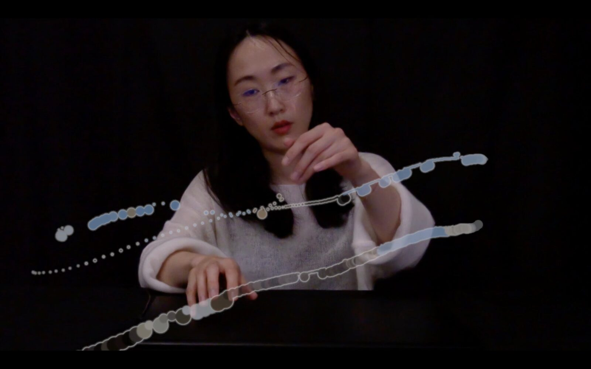

Impressions of the Pagodas
Project Description
“Drawing sound” has been a poetic idea that encouraging artists and musicians exploring intermedia expressions via real-time performance forces through data-driven instruments. Creating mutating mapping algorithms that connects performative actions with the music continuity and different visuals is one of the imaginative attempts in this composition and performance.
Type of submission
Option 2: “NIMEs with a story” - dedicated to NIMEs that have been presented before. This includes new pieces for interfaces that have been previously presented at NIME or outside of NIME.
Program Notes
Pagoda as a piece of architecture reflects history, aesthetics, religion, philosophy among many other cultural elements. Pagoda as a concept reminds me of each unique yet contemplative journey visiting different temples. The rituals of recitation and chanting practice in the temples offer the observers interfaces connecting themselves and the surroundings in different ways. In this piece, the impressions of the three pagodas are depicted in different audiovisual approaches through the real-time interactive performance.
Media
NIME 2022 Submission - Youtube Link Version
NIME 2022 Music Submission - Video Upload Version


NIME 2022 Music Submission - Image
Ethics Statement
Composing and performing music has been an activity evolving with human being over thousands of years. Music performance can bring people together, sharing with each other what we think, who we are, and how we live our lives. Discover new musical expressions, compositional approaches, performance techniques, among other creative activities are some of the tasks all musicians continue to explore. Using current technology, hardware, software, computer, and electronic techniques some of us use every day, can be a great way to connect people and express ourselves as composer of our time.
If we can access computer, utilitarian devices, various software, we can repurpose the modules, program algorithms, compose music, create performative actions, and create new musical expressions via newly configured data-driven instrument systems. The mutability of the instrument, the opportunity of reusing the computers, devices, designing algorithms via various software, computer programming languages welcome everyone creating music of our time.